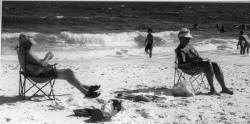

Earl Lee
The Breath of Life
“... and hold her / till she is awake again.”
Eric Dutton’s “Staying
Married”
After church
we lie together on the narrow futon
and I embrace you
like a thin tree snake holding a pregnant dove—
the look of peace in your eyes
is so gentle, your soul so clear that
the tears come to my eyes
again.
Your eyes
are open.
The white shift you wear, for purity’s sake,
is twisted aside, just as my black shirt
is loosed. It seems we have lain
this way for hours, maybe we have
always been this way as innocent lovers.
You move, slightly, to show you feel the
asthma attack coming. Alert to your signal, my
body grows hard again and the white inhaler in
my reverent hand moves up to your face.
It must
have been like this
the first time. It must have happened
like this when the Preacher, standing
in the shallow waters, put his giant’s
hand across your nose & mouth, and
lowered you into some rural southern
river. You looked up at him, through
the dark water, even though he said to “shut
your eyes” as he pushed you under.
When you were lifted up again, the rigor of mortality
transformed you into what you are today—
your mortified flesh seeking, again and again, to be sanctified.
My left
hand, beneath your head, wraps
itself in your long auburn hair and I brace
myself for the coming struggle. Your right arm
is pinioned helpless beneath my body and your left
is not strong enough to keep you from what
is about to happen (and we both know
this already, from severe practice).
The scratches on my face prove this:
Death can be relentless in his love.
Why must you must be punished this way,
again and again? Why is
Death my rival for your love?
This
position seems suited to the
struggle. My muscles, every sinew, goes hard
and taut, braced for this task. And your body
fights back against this cruel fate, the
unknowing lower reptilian brain struggles
for some tiny breath of life. The moments pass
and soon your eyes grow dim again, your voice
muffled from the struggle with death.
Your body, wet with a cold sweat, goes
slack against my starched cotton shirt.
You feel limp against me, and the weakness
fills my eyes with tears for what is lost.
I remove the inhaler. Soon I feel the faint intake
of breath and the barely muffled sob.
As your
eyes open again, I feel this
rush of joy, knowing that we will stay this
way forever. Yet, I do not leave you here
alone for more than a few hours at a time
because I do not want you, desperate for absolution,
to face this trial without me.
Accidents
happen. And sometimes
without possibility of redemption.
|

(photo by Reeves) |
{kind=link}